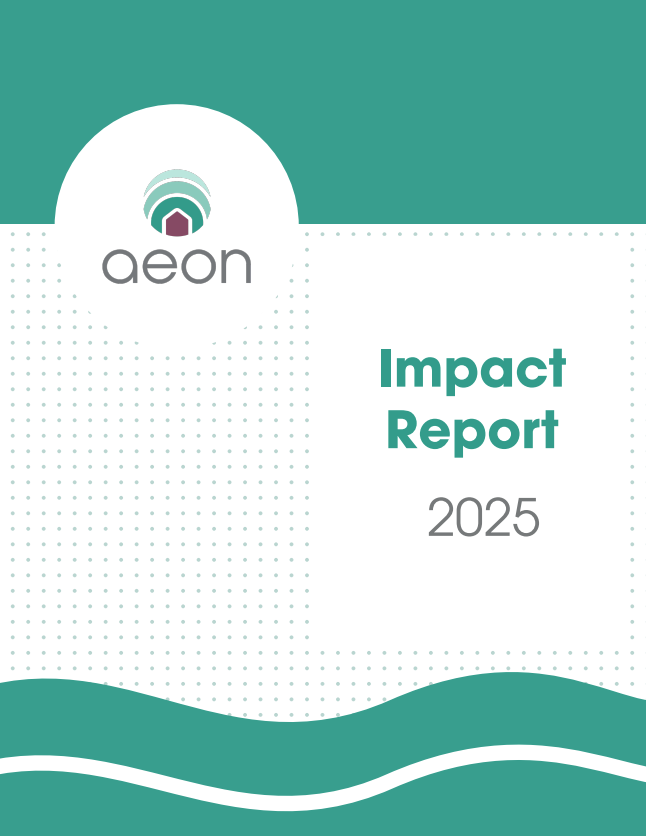

Minneapolis, MN
Graphic and UX design for organizations with something worth explaining well.
I'm a content strategist and graphic designer at Aeon, where I lead print, web, and brand design for a mission-driven organization.
Selected work
Publication, brand, and web design for Aeon, plus earlier work in marketing and video.

View PDF ↗Publication design
Aeon 2025 Impact Report
Editorial layout and data visualization for Aeon's annual report, translating a year of program data and donor impact into a publication people would actually want to read.
Web design
aeon.org/donate
A redesign of Aeon's donation page, reframing forty years of organizational history as an interactive timeline that leads into the ask, alongside video testimonials and a clear breakdown of ways to give beyond a one-time gift.
Web design
aeon.org/partner-with-us
A corporate sponsorship page organizing Aeon's partnership options into financial, in-kind, and volunteer tracks, with clear sponsorship tiers and a full wall recognizing current partners.
Campaign
Beyond Bricks & Mortar
Aeon's largest campaign to date, launched in May. I built the visual system and produced the print, digital, and social materials that carried it across channels.
Ongoing
Print, social, and email
The daily work behind the campaigns: donor and general-audience emails, social content, print collateral, and the occasional staff headshot.
About
I care about making mission-driven work look as considered as the mission itself.
At Aeon, a Minneapolis-based nonprofit, I work across print and digital: annual reports, campaigns, the website, social, and email, all under one visual system I'm responsible for keeping consistent.
Day to day, I'm in the full Adobe suite, mostly InDesign and Illustrator, alongside WordPress, Mailchimp, and FormAssembly.
- InDesign
- Illustrator
- WordPress
- Mailchimp
- FormAssembly
- Photoshop
Resume
A traditional, ATS-friendly resume covering my design and content strategy experience at Aeon and before.
Download PDF